| Our History |
We’ve been dedicated to our mission for a long time—since 1889, in fact. |
| 1889 |
Fusajiro Yamauchi began a small business manufacturing “Hanafuda” playing cards in Kyoto, Japan. |
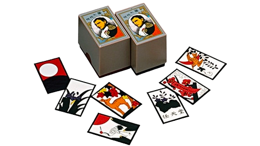 |
| 1980 |
Announced a wholly owned subsidiary, Nintendo of America Inc. (NOA). Started selling the Game & Watch™ product line. |
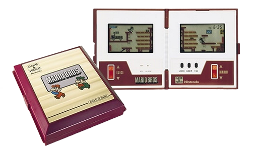 |
| 1981 |
Developed and began distribution of the coin-operated video game Donkey Kong™. This video game quickly became the hottest selling individual coin-operated machine in the business. |
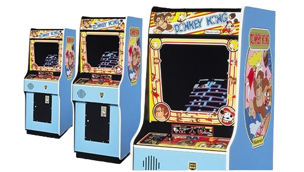 |
| 1985 |
The Nintendo Entertainment System™ (NES™) launched in America and became a smash hit. |
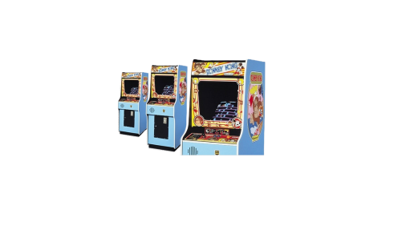 |
| 1985 |
Mario™ was first introduced in the Super Mario Bros.™ game. |
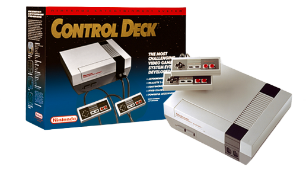 |
| 1986 |
The character Link™ made his first appearance in the Legend of Zelda™ game for NES. |
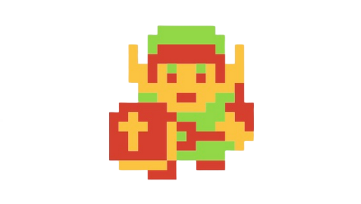 |
| 1989 |
Introduced Game Boy™, the first portable handheld game system. Originally bundled with the Tetris™ game, it was an instant phenomenon. |
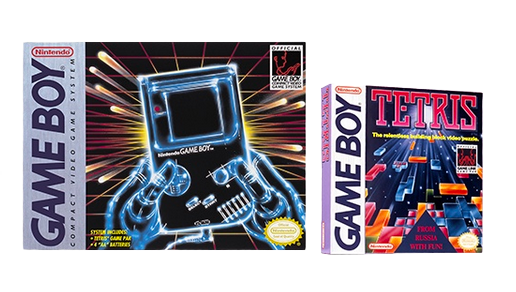 |
| 1991 |
The 16-bit Super Nintendo Entertainment System™ (Super NES™) was released in the U.S. |
|
| 1996 |
The Nintendo 64™ system launched in the U.S. on Sept. 29, along with the critically acclaimed Super Mario 64™ game. |
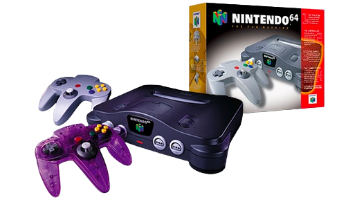 |
| 1998 |
Nintendo introduced Game Boy Color™. Pokémon™, a breakthrough game concept for Game Boy, was introduced to the world and generated a nationwide craze to “Catch ‘em All!” |
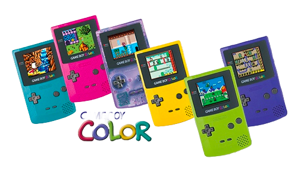 |
| 2001 |
Launched the Game Boy™ Advance and the Nintendo GameCube™ systems. The Nintendo GameCube was the first Nintendo system to use optical discs instead of cartridges for its games. |
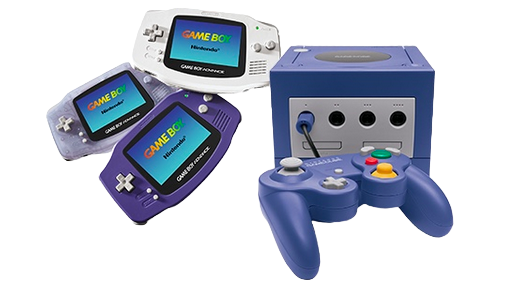 |
| 2004 |
Launched the Nintendo DS™, an innovative, dual-screen handheld gaming system. |
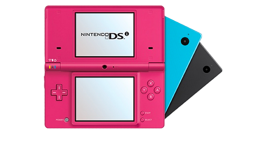 |
| 2006 |
Nintendo introduced the Wii™ system and with it several advanced features. Wireless motion-sensitive controllers, built-in Wi-Fi capability, and a host of other features made Wii the best-selling later-generation console system in the world. |
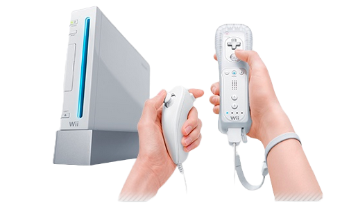 |
| 2008 |
Wii became the first system purchased by more than 10 million Americans in a single year. |
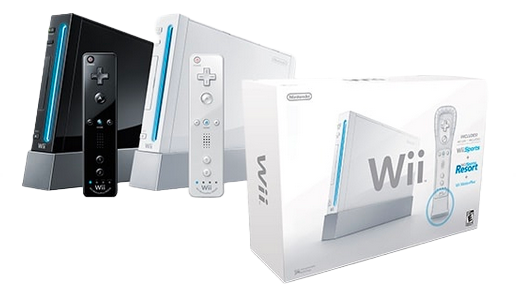 |
| 2011 |
The Nintendo 3DS™ system launched, letting users view and play 3D content without special 3D glasses. |
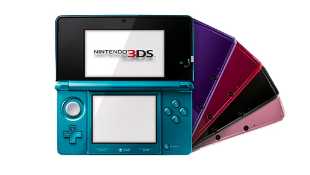 |
| 2012 |
The Wii U™ system launched with the innovative Wii U GamePad controller that offered users new ways to play together, including off-TV. This system also introduced support for amiibo™ accessories. |
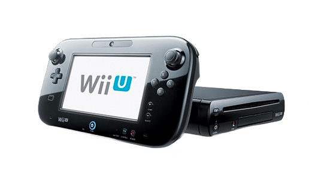 |
| 2015 |
The Splatoon™ game launched, introducing the squid-kids known as Inklings. |
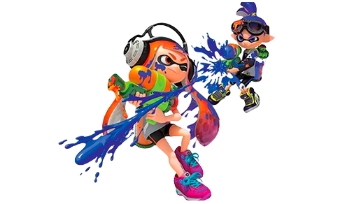 |
| 2017 |
The Nintendo Switch™ system launched, along with hits including Super Mario Odyssey™ and The Legend of Zelda™: Breath of the Wild. |
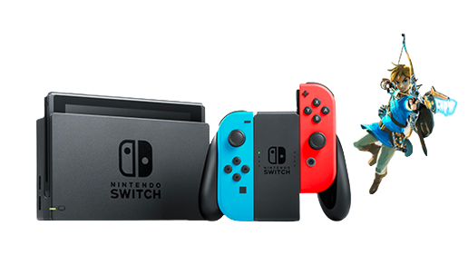 |
| 2019 |
The Nintendo Switch Lite system launched. Designed specifically for portable play, the compact system plays the library of Nintendo Switch games that work in handheld mode. |
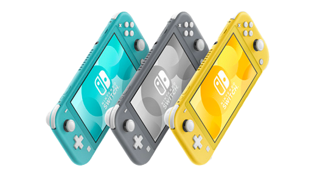 |